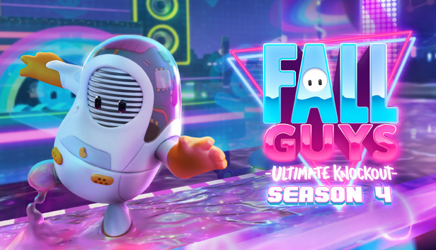

¡BIENVENIDO A LA SECCIÓN DE RECOMENDACIONES!
Si tienes dudas sobre que juego es el mejor, o simplemente quieres algo más para divertirte durante horas, quedate aquí
Al igual que en la sección de reseñas, estas recomendaciones están calificadas por el equipo tecnico de la pagina web para asegurarse que sean del agrado del cibernauta.
Si encuentras algo que restrinja las normas, no olvides contactarte con nosotros en la sección de CONTACTOS
Puedes calificar las recomendaciones si fueron de tu agrado

RECOMENDACIONES DE NUEVOS JUEGOS
LINGODEER
Lingo deer no es un juego como tal, pero es un software que te puede ayudar mucho si queires aprender un nuevo idioma, tiene una variante de idiomas muy grande que puedes probar. El aprendizaje que tendrás será 100% didáctico, con actividades, cuentos y juegos divertidos. Mi recomendación para este software es de un 10/10
CALIFICACIÓN: 10/10
THE SIMS 4

Este juego lleva ya unos años en las plataformas y nunca pasará de moda. Se trata de un videojuego interactivo, donde darás vida y misiones a tu personaje. Puedes controlar a tu Sim al mismo tiempo de que puedes hacerlo totalmente independiente, puedes mandarlo a la escuela o al trabajo dependiendo de la etapa de su vida en donde se encuentren. Has un pequeño dominio en un mundo virtual tan libre como este. Mi recomendación para este juego es un 10/10
CALIFICACIÓN: 10/10
POKEMON GO

El juego consiste en buscar y capturar personajes de la saga Pokémon escondidos en ubicaciones del mundo real y luchar con ellos, lo que implica desplazarse físicamente por las calles de la ciudad para progresar. La aplicación comporta un elemento de interacción social, ya que promueve reuniones físicas de los usuarios en distintas ubicaciones de sus poblaciones y bosques entre otros.
CALIFICACIÓN: 9/10
FALL GUYS

Fall Guys es un juego multijugador masivo tipo party con hasta 60 jugadores online en un enfrentamiento todos contra todos que se desarrolla ronda tras ronda entre un caos creciente hasta que solo queda un único vencedor. fracasa con estilo gracias a las posibilidades de personalización de Fall Guys, que van desde un elegante disfraz de piña hasta lo último en gorros de conejo.
CALIFICACIÓN: 9.3/10